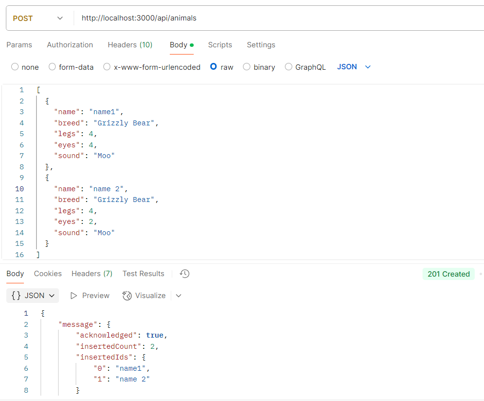
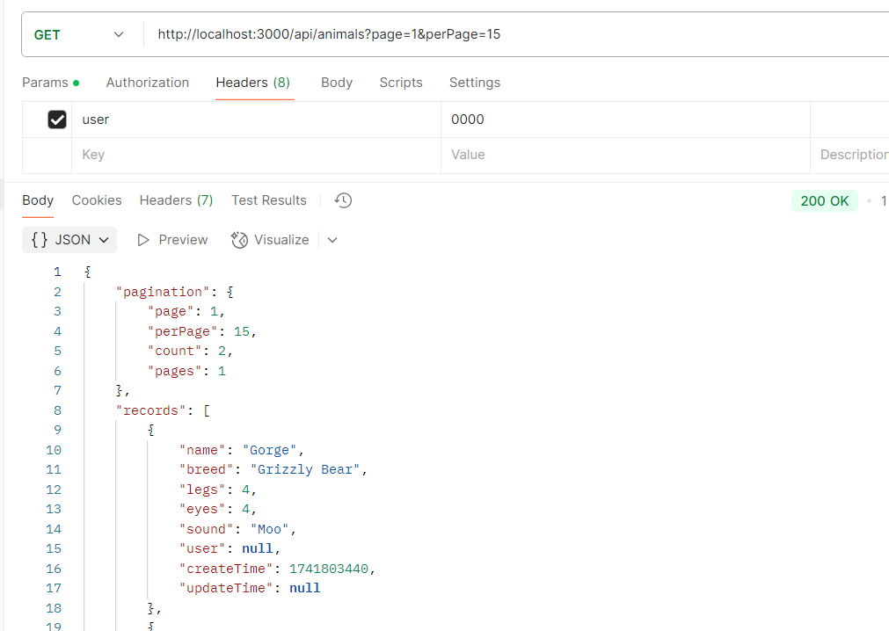
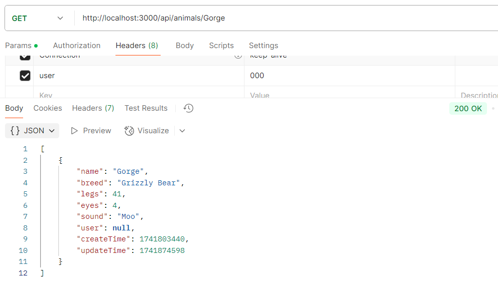
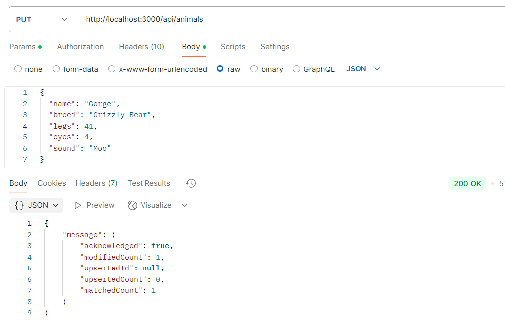
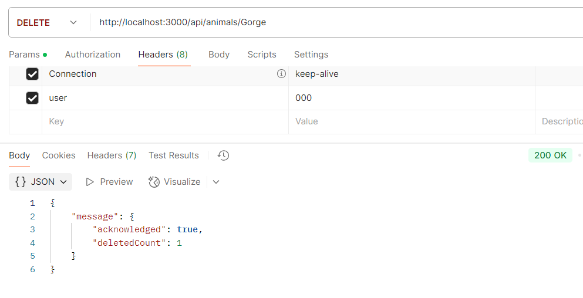

After finishing above steps, you can launch express server.
Test Animal Api
Run PostMan to test all CRUD animal apis.
Create

Read

Find

Update

Delete

Consume Animal Api
Press Control + C to shutDown express server.
In ice 12 and 14, we copied all animal client files to public folder. We need to create an animal folder
under public folder and move all client animal files over there. The sample is here.
In animal.service.js file, change the host to be window.location.origin. The sample is here.